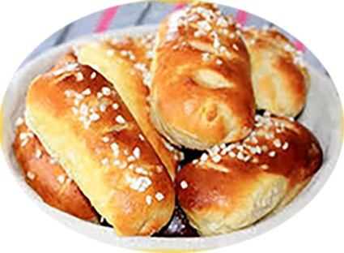

Pain au yaourt

Pour 6 personnes
Préparation : 15 mn
Repos : 0h
Cuisson : 25 mn
Ingrédients
- 600 gr de farine
- 50 gr de sucre
- 2 pots de yaourt nature
- 24 gr de levure fraiche
- 10cl de lait tiède
- 2 c à s de miel
- 1 c à s d'huile d'olives + 4 c à s d'huile de tournesol
- 1 c à c de sel
- 1 œuf entier
- 1 jaune d'œuf + 3c à s de lait pour la dorure
Recette
- Délayer la levure dans le lait tiède, laisser reposer pendant 10 mn.
- Dans un saladier, versez la farine, le sel, le sucre, les yaourts, l'oeuf, le miel, l'huile. Ajoutez la levure diluée.
- Pétrir entre 10 et 20 mn, jusqu'à ce que la pâte se décolle de la paroi.
- Laisser lever dans un endroit tiède.
- Sur une plaque façonnez entre 12 et 15 petits pains. Laissez levez 30 mn.
- Préchauffez le four 180°.
- Après le temps de pose dorez les petits pains.
- A l'aide d'un ciseau faire quelques entailles assez profondes.
- Enfournez pour 15 à 30 mn.
|